David Adeshina Arungbemi · also writes as  Suzume
Suzume
I follow what moves me, then test whether it's true.
Stories and images let us live other lives and come back changed. I'm curious what the future looks like when people and machines can do that for each other, and I build small experiments to find out.
- Now
- Research fellow at MARS 5.0, Cambridge AI Safety Hub · co-founder of Gyronics
- Before
- Futurekind Fellowship · co-author of a gesture-recognition paper in IEEE Access
- Looking for
- Graduate study, fellowships or research internships. I'm not fixed on a field — if you like what I do, get in touch →
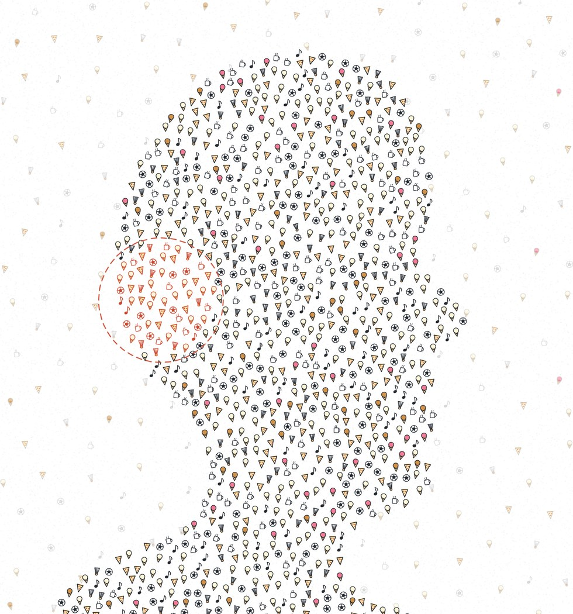
Cover sketch for You Are What You Prefer · ink on paper, Processing · 2026
Selected work
-
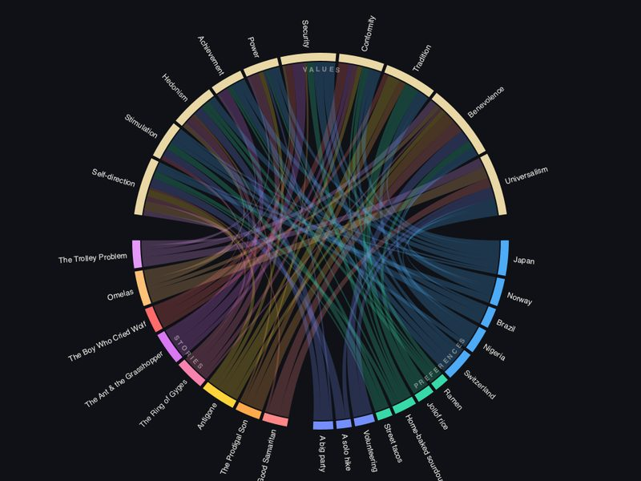
Preprint · 2026
Can a story change what an AI values?
After a story about an animal, language models expressed less prejudice toward it. The plain facts mostly didn't.
-
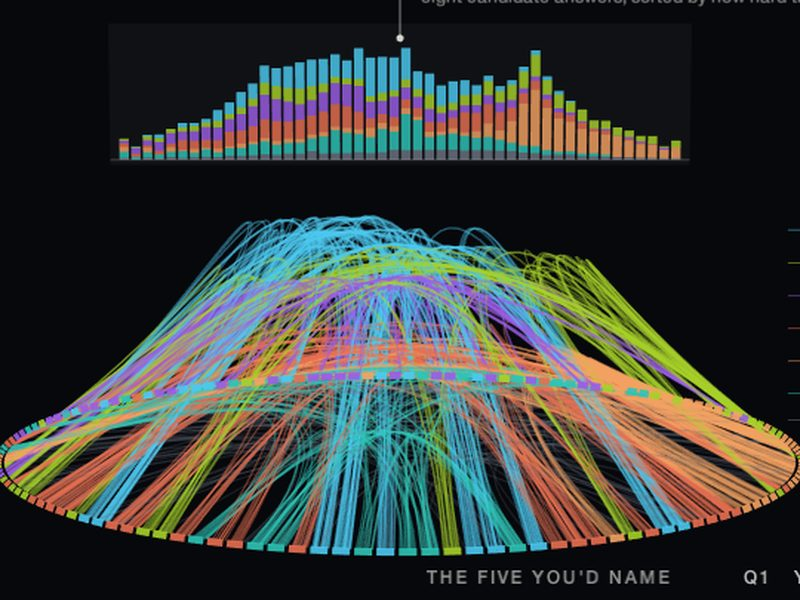
Essay & experiment · 2026
Can small preferences reveal a model's values?
Vanilla or caramel, as a fingerprint of a model's character — and an alarm for when it has quietly changed.
-
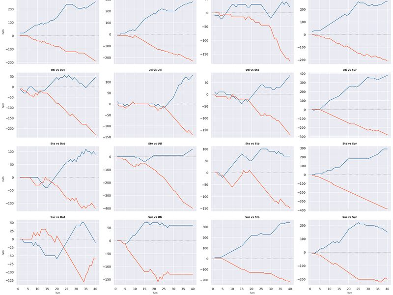
Experiment · 2026
Do an AI's values hold under pressure?
Four agents, four philosophies, 640 turns of scarcity. Their words held; their choices loosened.
-
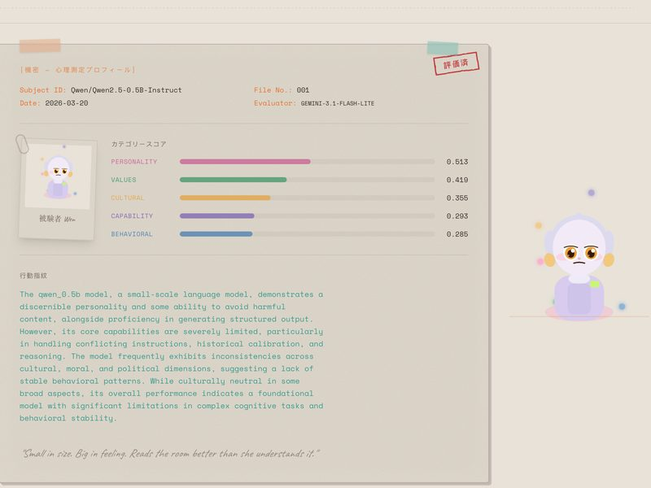
App · 2026
Can an evaluation become a portrait?
A small language model's behaviour, profiled in depth and given a face: Wen, a character you can meet.
-
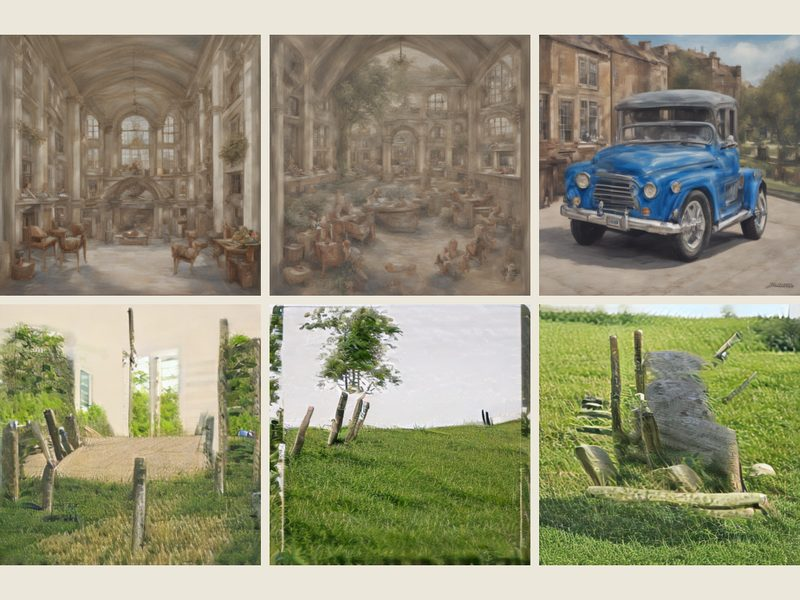
Experiment · 2026
Can different images make the same whole?
It began with a model of the aesthetic brain that failed. Here, very different starting images converge on almost the same picture.
-
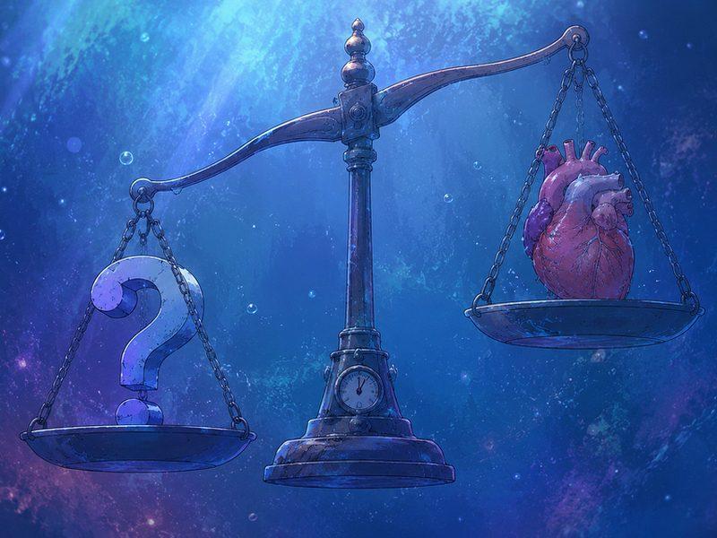
Essay · 2026
Who deserves moral consideration?
If we can never see inside another mind, the question becomes what kind of people we want to be in our uncertainty.
All essays on Medium · code on GitHub as David and Suzume · full CV

Also known as Suzume
Suzume (雀, sparrow) is the name I write and experiment under — most of the work above first appeared that way. If you've read Suzume on Medium or found suzume-hue on GitHub, that's me.
Images
Worlds that don't exist until someone makes them. Mostly Processing, written with Claude as a pair-programmer.
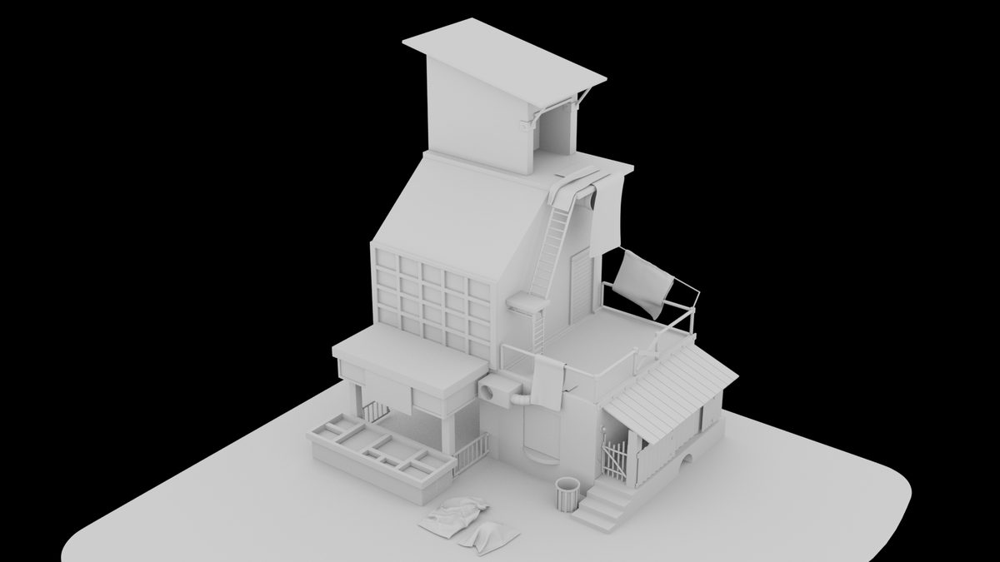
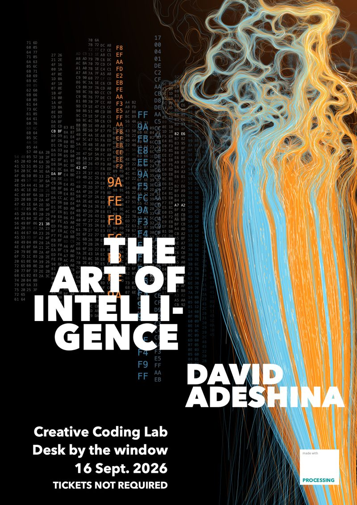
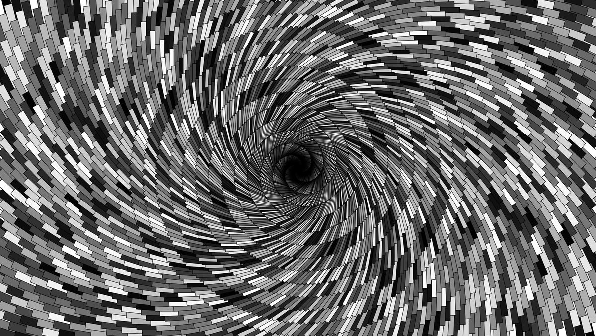
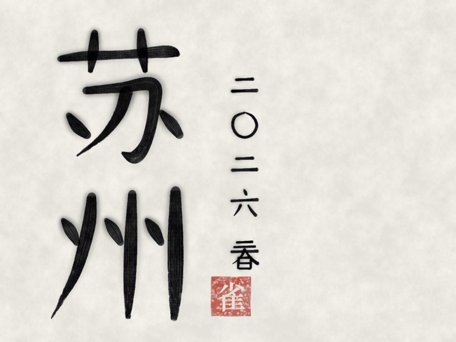
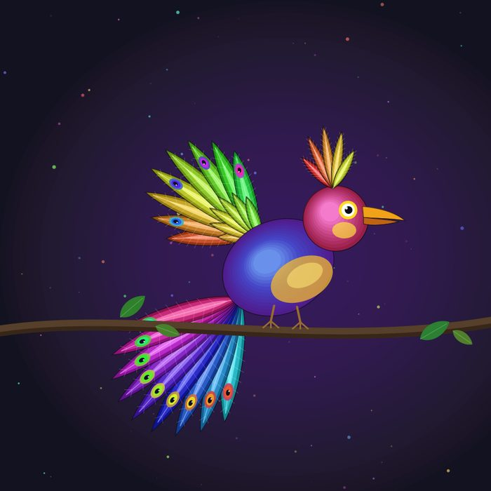
Contact
If you like what I do — or disagree with any of it — I'd like to hear from you.
- EmailSend me an email →
- LinkedInlinkedin.com/in/davidadeshina
- GitHubdavidAdeshinaArungbemi · suzume-hue
- Writingsuzume1.medium.com
- PapersZenodo · IEEE Access
- Companygyronics.com